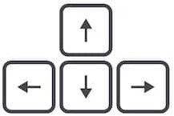

Historia:
Ayuda a Panfilo Jerundio Filomeno. El explorador, Pirata, Vaquero, Soldado, Gobernador, Trailero
espacial a cruzar el campo de asteroides para poder llevar las cargas de refresco Pascual al otro lado, donde familias que acaban de comer
quesadillas con queso, necesitan de ese liquido vital para poderse bajar sus alimentos.
Instrucciones:
Utiliza las flechas del teclado para moverte

Pulsa F para disparar